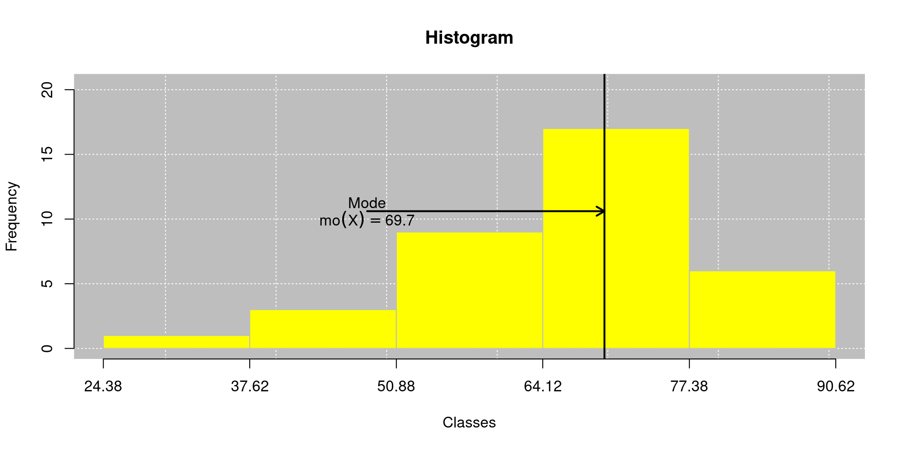

| 3 | 1 | 0 | 1 | 3 | 2 | 4 | 1 | 3 | 1 |
| 1 | 1 | 2 | 3 | 3 | 2 | 0 | 2 | 0 | 1 |
Estatística e Probabilidade
Aula 05 - Medidas de posição
Filosofia de publicação (Selo DC)

Livro de Apoio
Usaremos Batista (2023):

Tipos de medidas
- Média aritmética
- Mediana
- Moda
Média Aritmética
Definição (Média aritmética): Seja uma amostra \(X_1\), \(X_2\), \(\ldots\), \(X_n\), de uma população \(X_1\), \(X_2\), \(\ldots\), \(X_N\), de tamanhos \(n\) e \(N\), respectivamente, definimos a média aritmética por:
\[\begin{align*} \mu & = \frac{\displaystyle\sum_{i=1}^{N}X_i}{N}, \quad \textrm{(População)} \end{align*}\] e \[\begin{align*} \bar{X} = \frac{\displaystyle\sum_{i=1}^{n}X_i}{n}. \quad \textrm{(Amostra)} \end{align*}\]
Média Aritmética (Dados agrupados)
Definição (Média aritmética): Seja uma amostra \(X_1\), \(X_2\), , \(X_n\), de tamanho \(n\), agrupados em \(k\) grupos com variáveis \(X_i\) e frequência \(F_i\), ou \(k\) classes com pontos médios \(\tilde{X}_i\) e \(F_i\) frequências, para \(i\) \(=\) \(1\), \(2\), \(\ldots\), \(k\) e \(\sum_{i = 1}^{k}F_i = n\), então a média aritmética de uma amostra, é definida por: \[\begin{align}\label{eq:mediaagrup} \bar{X} & = \left\{\begin{array}{ll} \frac{\sum_{i = 1}^{k}X_i \times F_i}{\sum_{i = 1}^{k}F_i}, & \textrm{agrupados sem intervalo de classe}, \\ &\\ \frac{\sum_{i = 1}^{k}\tilde{X}_i \times F_i}{\sum_{i = 1}^{k}F_i}, & \textrm{agrupados com intervalo de classe},\\ \end{array}\right. \end{align}\] sendo \(\tilde{X}_{i}\) o ponto médio das classes.
Exemplo 1 - Número de erros
Dados do número de erros encontrados em 20 conjuntos de caracteres monitorado em um canal de comunicação.
- \[\begin{align*} \bar{X} = \frac{3 + 1 + \ldots + 1}{20}=\frac{34}{20}= 1,7~\textrm{erros}. \end{align*}\]
Exemplo 1 - Número de erros
Retornando o exemplo anterior…
\[\begin{align*} \bar{X} & = \sum_{i=1}^{n}\tilde{X}_if_i / \sum_{i=1}^{n}f_i \\ & = \frac{0 \times 3 + \ldots + 5 \times 4}{20}\\ & = 1,7~\textrm{erros}. \end{align*}\]
Tabela de frequência
Tipo de variável: discrete
Groups Fi Fr Fac1 Fac2 Fp Fac1p Fac2p
1 0 3 0.15 3 20 15 15 100
2 1 7 0.35 10 17 35 50 85
3 2 4 0.20 14 10 20 70 50
4 3 5 0.25 19 6 25 95 30
5 4 1 0.05 20 1 5 100 5
==============================================
Groups: Agrupamento discretizado
Fi: Frequência absoluta
Fr: Frequência relativa
Fac1: Frequência acumulada (abaixo de)
Fac2: Frequência acumulada (acima de)
Fp: Frequência percentual
Fac1p: Frequência acumulada percentual (abaixo de)
Fac2p: Frequência acumulada percentual (acima de) Exemplo 2 - Challenger
Os dados representam a temperatura (°F) do anel de vedação de cada teste de acionamento ou lançamento real do motor do foguete Challenger
| 84 | 40 | 45 | 69 | 68 | 72 | 57 | 78 | 53 | 61 | 76 | 76 |
| 49 | 83 | 66 | 80 | 60 | 73 | 63 | 52 | 67 | 70 | 79 | 58 |
| 61 | 67 | 70 | 58 | 67 | 70 | 70 | 67 | 75 | 81 | 75 | 31 |
Exemplo (continuação…)
Retornando o exemplo anterior…
\[\begin{align*} \bar{X} & = \sum_{i=1}^{n}\tilde{X}_if_i / \sum_{i=1}^{n}f_i \\ & = \frac{31 \times 1 + \ldots + 41.6 \times 2}{20}\\ & = 66,04~\textrm{°F}. \end{align*}\]
Tabela de frequência
Tipo de variável: continuous
Classes Fi PM Fr Fac1 Fac2 Fp Fac1p Fac2p
1 25.7 |--- 36.3 1 31.0 0.03 1 36 3 2.78 100.00
2 36.3 |--- 46.9 2 41.6 0.06 3 35 6 8.33 97.22
3 46.9 |--- 57.5 4 52.2 0.11 7 33 11 19.44 91.67
4 57.5 |--- 68.1 12 62.8 0.33 19 29 33 52.78 80.56
5 68.1 |--- 78.7 12 73.4 0.33 31 17 33 86.11 47.22
6 78.7 |--- 89.3 5 84.0 0.14 36 5 14 100.00 13.89
==============================================
Classes: Agrupamento de classes
Fi: Frequência absoluta
PM: Ponto médio
Fr: Frequência relativa
Fac1: Frequência acumulada (abaixo de)
Fac2: Frequência acumulada (acima de)
Fp: Frequência percentual
Fac1p: Frequência acumulada percentual (abaixo de)
Fac2p: Frequência acumulada percentual (acima de) Usando o leem
- Exemplo 1 - Número de erros
- Exemplo 2 - Challenger
- Funções:
new_leem(),tabfreq(),mean(),insert()
dado |> # Entrada dos dados
new_leem() |> # Estruturando os dados a classe leem
# Opções:
# new_leem(variable = 1) # => variável discreta
# new_leem(variable = 2) # => variável contínua
tabfreq() |> # Distribuição de frequência
mean() # Cálculo da média
# Opções:
# mean(grouped = TRUE) # => Dados agrupados (Padrão)
# mean(grouped = FALSE) # => Dados não agrupadosUsando o leem (continuação…)
Exemplo 1 - Com agrupamento
Exemplo 1 - Sem agrupamento
Usando o leem (continuação…)
Exemplo 2 - Com agrupamento
Exemplo 2 - Sem agrupamento
Usando o leem (continuação…)
Verificando a mediana no histograma:
Características da média
- a unidade da média está na mesma escala da variável em estudo;
- a média é uma das medidas mais conhecidas e utilizadas, devido as suas propriedades estatísticas que serão vistas nos capítulos seguintes;
- é única para cada conjunto de dados;
- usada apenas para variáveis quantitativas;
- não pode ser calculada para dados agrupados que apresentam classes extremas abertas;
- é influenciada por dados discrepantes.
Propriedades da média
Teorema: Baseado na Definição sobre a média, e considerando \(c\) uma constante, então:
Se para uma amostra \(X_1\), \(X_2\), , \(X_n\), a média aritmética é dada por \(\bar{X} = \frac{\sum_{i=1}^{n}X_i}{n}\), então para uma transformação de \(Y_i = X_i \pm c\), para \(i\) \(=\) \(1\), \(2\), \(\ldots\), \(n\), a nova média aritmética é dada por \(\bar{Y} = \bar{X} \pm c\);
Se para uma amostra \(X_1\), \(X_2\), , \(X_n\), a média aritmética é dada por \(\bar{X} = \frac{\sum_{i=1}^{n}X_i}{n}\), então para uma transformação de \(Y_i = X_i \times c\), para \(i\) \(=\) \(1\), \(2\), \(\ldots\), \(n\), a nova média aritmética é dada por \(\bar{Y} = \bar{X} \times c\). Esse resultado vale também para a transformação \(Y_i = X_i / m\), sendo \(m\) também uma constante. Basta usar \(c = 1 / m\) e o resultado é o mesmo.
A soma de quadrado de desvios dos dados em relação a uma constante \(c\), é minimizada se \(c = \bar{X}\).
Mediana
Definição (Mediana): Seja uma amostra \(X_1\), \(X_2\), , \(X_n\), de uma população \(X_1\), \(X_2\), , \(X_N\), de tamanhos \(n\) e \(N\), respectivamente, definimos a mediana por: \[\begin{align*} \mu_d(X) & = \left\{\begin{array}{ll} \frac{X_{(\frac{N}{2})} + X_{\left( \frac{N}{2} + 1 \right)}}{2}, & \textrm{se } N \textrm{ for par} \\ & \\ X_{(\frac{N + 1}{2})}, & \textrm{se } N \textrm{ for ímpar} \\ \end{array}\right., \quad \textrm{(População)} \end{align*}\]
Mediana (continuação…)
(Continuação…): sendo \(\mu_d(X)\) a mediana populacional e que \(X_{(i)}\) é a \((i)\)-ésima variável em ordem crescente de magnitude, tal que \(X_{(1)} = \min\limits_{i}X_i\) e \(X_{(n)} = \max\limits_{i}X_i\). De modo similar, \[\begin{align*} Md(X) & = \left\{\begin{array}{ll} \frac{X_{(\frac{n}{2})} + X_{\left( \frac{n}{2} + 1 \right)}}{2}, & \textrm{se } n \textrm{ for par} \\ & \\ X_{(\frac{n + 1}{2})}, & \textrm{se } n \textrm{ for ímpar} \\ \end{array}\right., \quad \textrm{(Amostra)} \end{align*}\] sendo \(Md(X)\) a mediana amostral e que \(X_{(i)}\) é a \((i)\)-ésima variável em ordem crescente de magnitude, tal que \(X_{(1)} = \min\limits_{i}X_i\) e \(X_{(n)} = \max\limits_{i}X_i\).
Mediana (Agrupamento com classes)
Definição (Mediana): Seja uma amostra \(X_{(1)}\), \(X_{(2)}\), , \(X_{(n)}\) em ordem crescente de magnitude, de tamanho \(n\), agrupados em \(k\) classes com pontos médios \(\tilde{X}_i\) e \(F_i\) frequências, para \(i\) \(=\) \(1\), \(2\), \(\ldots\), \(k\) e \(\sum_{i = 1}^{k}F_i = n\), então a mediana amostral é definida por: \[\begin{align*} Md(X) = LI_{Md} + \left\lbrace \frac{\frac{n}{2}-f_{ant}}{f_{Md}}\right\rbrace \times c. \end{align*}\] em que \(LI_{Md}\) é o limite inferior da classe da mediana, \(f_{ant}\) é a frequência acumulada (abaixo de) anterior a classe da mediana, \(f_{Md}\) frequência absoluta da classe da mediana, \(c\) a amplitude da classe da mediana,
Mediana (continuação…)
(continuação…): ou de forma similar, \[\begin{align*} Md(X) = LS_{Md} - \left\lbrace \frac{\frac{n}{2}-f_{post}}{f_{Md}} \right\rbrace \times c. \end{align*}\] em que \(LS_{Md}\) é o limite superior da classe da mediana e \(f_{post}\) é a frequência acumulada (acima de) posterior a classe da mediana.
Exemplo 1 - Número de erros
Dados do número de erros encontrados em 20 conjuntos de caracteres monitorado em um canal de comunicação.
| 3 | 1 | 0 | 1 | 3 | 2 | 4 | 1 | 3 | 1 |
| 1 | 1 | 2 | 3 | 3 | 2 | 0 | 2 | 0 | 1 |
Ordenando os dados, temos:
| 0 | 0 | 0 | 1 | 1 | 1 | 1 | 1 | 1 | 1 |
| 2 | 2 | 2 | 2 | 3 | 3 | 3 | 3 | 3 | 4 |
Calculando a mediana, temos:
\[\begin{align*} Md(X) = \frac{X_{(\frac{20}{2})} + X_{\left( \frac{20}{2} + 1 \right)}}{2} = \frac{X_{(10)} + X_{(11)}}{2} = \frac{1 + 2}{2} = 1,5~\textrm{erros}. \end{align*}\]
Exemplo 2 - Challenger
Os dados representam a temperatura (°F) do anel de vedação de cada teste de acionamento ou lançamento real do motor do foguete Challenger
| 84 | 40 | 45 | 69 | 68 | 72 | 57 | 78 | 53 | 61 | 76 | 76 |
| 49 | 83 | 66 | 80 | 60 | 73 | 63 | 52 | 67 | 70 | 79 | 58 |
| 61 | 67 | 70 | 58 | 67 | 70 | 70 | 67 | 75 | 81 | 75 | 31 |
Ordenando os dados, temos:
| 31 | 40 | 45 | 49 | 52 | 53 | 57 | 58 | 58 | 60 | 61 | 61 |
| 63 | 66 | 67 | 67 | 67 | 67 | 68 | 69 | 70 | 70 | 70 | 70 |
| 72 | 73 | 75 | 75 | 76 | 76 | 78 | 79 | 80 | 81 | 83 | 84 |
Exemplo (continuação…)
Retornando o exemplo anterior…
Sem agrupamento, temos:
\[\begin{align*} Md(X) & = \frac{X_{(\frac{36}{2})} + X_{\left( \frac{36}{2} + 1 \right)}}{2}\\ & = \frac{X_{(18)} + X_{(19)}}{2} = \frac{67 + 68}{2}\\ & = 67,5~\textrm{°F}. \end{align*}\]
Com o agrupamento, temos:
\[\begin{align*} Md(X) & = LI_{Md} + \left\lbrace \frac{\frac{n}{2}-f_{ant}}{f_{Md}}\right\rbrace \times c \\ & = 57,5 + \left\lbrace \frac{\frac{36}{2}-7}{12}\right\rbrace \times (68,1 - 57,5)\\ & = 57,5 + \left\lbrace \frac{18-7}{12}\right\rbrace \times (10,6)\\ & = 67,22~\textrm{°F}. \end{align*}\]
Tabela de frequência
Tipo de variável: continuous
Classes Fi PM Fr Fac1 Fac2 Fp Fac1p Fac2p
1 25.7 |--- 36.3 1 31.0 0.03 1 36 3 2.78 100.00
2 36.3 |--- 46.9 2 41.6 0.06 3 35 6 8.33 97.22
3 46.9 |--- 57.5 4 52.2 0.11 7 33 11 19.44 91.67
4 57.5 |--- 68.1 12 62.8 0.33 19 29 33 52.78 80.56
5 68.1 |--- 78.7 12 73.4 0.33 31 17 33 86.11 47.22
6 78.7 |--- 89.3 5 84.0 0.14 36 5 14 100.00 13.89
==============================================
Classes: Agrupamento de classes
Fi: Frequência absoluta
PM: Ponto médio
Fr: Frequência relativa
Fac1: Frequência acumulada (abaixo de)
Fac2: Frequência acumulada (acima de)
Fp: Frequência percentual
Fac1p: Frequência acumulada percentual (abaixo de)
Fac2p: Frequência acumulada percentual (acima de) Usando o leem
- Exemplo 1 - Número de erros
- Exemplo 2 - Challenger
- Funções:
new_leem(),tabfreq(),median(),insert()
dado |> # Entrada dos dados
new_leem() |> # Estruturando os dados a classe leem
# Opções:
# new_leem(variable = 1) # => variável discreta
# new_leem(variable = 2) # => variável contínua
tabfreq() |> # Distribuição de frequência
median() # Cálculo da mediana
# Opções:
# median(grouped = TRUE) # => Dados agrupados (Padrão)
# median(grouped = FALSE) # => Dados não agrupadosUsando o leem (continuação…)
Exemplo 1 - Com agrupamento
Exemplo 1 - Sem agrupamento
Usando o leem (continuação…)
Exemplo 2 - Com agrupamento
Exemplo 2 - Sem agrupamento
Usando o leem (continuação…)
Verificando a mediana no histograma:
Características da mediana
- A mediana não é influenciada por valores extremos;
- Uma medida que pode ser obtida em distribuições de frequências que apresentam classe com limites indefinidos;
- o resultado da mediana é obtida na mesma escala da variavel em estudo;
- a mediana é menos informativa que a média, por não levar em consideração os valores observados, mas as posições dessas observações;
- a mediana pode ser calculada em variáveis qualitativas ordinais, cuja média não pode ser obtida;
- a mediana ainda pode ser obtida em um conjunto de dados em que alguns valores ainda não foram registrados, caso em que a média não pode ser obtida.
Propriedades da mediana
Teorema: Baseado na Definição sobre a mediana, e considerando \(c\) uma constante, então:
- Se para uma amostra \(X_{(1)}\), \(X_{(2)}\), \(\ldots\), \(X_{(n)}\) em ordem crescente de magnitude, a mediana é dada por \(Md{X} = X_{(\frac{n + 1}{2})}\), então para uma transformação de \(Y_i = X_i \pm c\), para \(i\) \(=\) \(1\), \(2\), \(\ldots\), \(n\), a mediana aritmética é dada por \(Md(Y) = Md(X) \pm c\);
- Se para uma amostra \(X_{(1)}\), \(X_{(2)}\), \(\ldots\), \(X_{(n)}\) em ordem crescente de magnitude, a mediana é dada por \(Md(X) = X_{(\frac{n + 1}{2})}\), então para uma transformação de \(Y_i = X_i \pm c\), para \(i\) \(=\) \(1\), \(2\), \(\ldots\), \(n\), a nova mediana é dada por \(Md(Y) = Md(X) \times c\). Esse resultado vale também para a transformação \(Y_i = X_i / m\), sendo \(m\) também uma constante. Basta usar \(c = 1 / m\) e o resultado é o mesmo.
- A soma do módulo dos desvios dos dados em relação a uma constante arbitrária \(c\), terá um valor mínimo se \(c=Md(X)\).
Moda
Definição (Moda para dados discretizados): Seja uma amostra \(X_1\), \(X_2\), , \(X_n\), de uma população \(X_1\), \(X_2\), \(\ldots\), \(X_N\), de tamanhos \(n\) e \(N\), respectivamente, cuja natureza da variável é discretizada. Então a moda representa o valor que mais se repete em um conjunto de dados. Denotamos \(\mu_o\) a moda populacional, e \(Mo(X)\) a moda amostral.
Moda (Agrupamento com classes)
Definição (Moda): Seja uma amostra \(X_{(1)}\), \(X_{(2)}\), , \(X_{(n)}\) em ordem crescente de magnitude, de tamanho \(n\), agrupados em \(k\) classes com pontos médios \(\tilde{X}_i\) e \(F_i\) frequências, para \(i\) \(=\) \(1\), \(2\), \(\ldots\), \(k\) e \(\sum_{i = 1}^{k}F_i = n\), então a moda amostral é definida por: \[\begin{align} Mo(X) & = LI_{Mo} + \left\lbrace \frac{\Delta_1}{\Delta_1 + \Delta_2}\right \rbrace \times c, \end{align}\] em que \(LI_{Mo}\) o limite inferior da classe da moda, \(\Delta_1 = f_{Mo} - f_{i_{ant}}\), \(\Delta_2 = f_{Mo} - f_{i_{post}}\), \(f_{Mo}\) é a frequência absoluta da classe da moda, \(f_{i_{ant}}\) frequência absoluta anterior à classe da moda, \(f_{i_{post}}\) frequência posterior à classe da moda, e \(c\) a amplitude da classe.
Exemplo 1 - Número de erros
Dados do número de erros encontrados em 20 conjuntos de caracteres monitorado em um canal de comunicação.
| 3 | 1 | 0 | 1 | 3 | 2 | 4 | 1 | 3 | 1 |
| 1 | 1 | 2 | 3 | 3 | 2 | 0 | 2 | 0 | 1 |
Calculando a moda, temos:
\[\begin{align*} Mo(X) = 1,0~\textrm{erros}. \end{align*}\]
Exemplo 2 - Challenger
Os dados representam a temperatura (°F) do anel de vedação de cada teste de acionamento ou lançamento real do motor do foguete Challenger
| 84 | 40 | 45 | 69 | 68 | 72 | 57 | 78 | 53 | 61 | 76 | 76 |
| 49 | 83 | 66 | 80 | 60 | 73 | 63 | 52 | 67 | 70 | 79 | 58 |
| 61 | 67 | 70 | 58 | 67 | 70 | 70 | 67 | 75 | 81 | 75 | 31 |
Ordenando os dados, temos:
| 31 | 40 | 45 | 49 | 52 | 53 | 57 | 58 | 58 | 60 | 61 | 61 |
| 63 | 66 | 67 | 67 | 67 | 67 | 68 | 69 | 70 | 70 | 70 | 70 |
| 72 | 73 | 75 | 75 | 76 | 76 | 78 | 79 | 80 | 81 | 83 | 84 |
Exemplo (continuação…)
Retornando o exemplo anterior…
Sem agrupamento, temos:
\[\begin{align*} Mo(X) & = 67~\textrm{°F},~70~\textrm{°F}. \end{align*}\]
Com o agrupamento, temos:
\[\begin{align*} Mo(X)_1 & = LI_{Mo} + \left\lbrace \frac{\Delta_1}{\Delta_1 + \Delta_2}\right \rbrace \times c \\ & = 57,5 + \left\lbrace \frac{12 - 4}{(12 - 4) + (12 - 12)}\right\rbrace \times (68,1 - 57,5)\\ & = 68,1~\textrm{°F}. \end{align*}\]
\[\begin{align*} Mo(X)_2 & = LI_{Mo} + \left\lbrace \frac{\Delta_1}{\Delta_1 + \Delta_2}\right \rbrace \times c \\ & = 68,1 + \left\lbrace \frac{12 - 12}{(12 - 12) + (12 - 5)}\right\rbrace \times (68,1 - 57,5)\\ & = 68,1~\textrm{°F}. \end{align*}\]
Tabela de frequência
Tipo de variável: continuous
Classes Fi PM Fr Fac1 Fac2 Fp Fac1p Fac2p
1 25.7 |--- 36.3 1 31.0 0.03 1 36 3 2.78 100.00
2 36.3 |--- 46.9 2 41.6 0.06 3 35 6 8.33 97.22
3 46.9 |--- 57.5 4 52.2 0.11 7 33 11 19.44 91.67
4 57.5 |--- 68.1 12 62.8 0.33 19 29 33 52.78 80.56
5 68.1 |--- 78.7 12 73.4 0.33 31 17 33 86.11 47.22
6 78.7 |--- 89.3 5 84.0 0.14 36 5 14 100.00 13.89
==============================================
Classes: Agrupamento de classes
Fi: Frequência absoluta
PM: Ponto médio
Fr: Frequência relativa
Fac1: Frequência acumulada (abaixo de)
Fac2: Frequência acumulada (acima de)
Fp: Frequência percentual
Fac1p: Frequência acumulada percentual (abaixo de)
Fac2p: Frequência acumulada percentual (acima de) Usando o leem
- Exemplo 1 - Número de erros
- Exemplo 2 - Challenger
- Funções:
new_leem(),tabfreq(),mfreq(),insert()
dado |> # Entrada dos dados
new_leem() |> # Estruturando os dados a classe leem
# Opções:
# new_leem(variable = 1) # => variável discreta
# new_leem(variable = 2) # => variável contínua
tabfreq() |> # Distribuição de frequência
mfreq() # Cálculo da média
# Opções:
# mfreq(grouped = TRUE) # => Dados agrupados (Padrão)
# mfreq(grouped = FALSE) # => Dados não agrupadosUsando o leem (continuação…)
Exemplo 1 - Com agrupamento
Exemplo 1 - Sem agrupamento
Usando o leem (continuação…)
Exemplo 2 - Com agrupamento
Exemplo 2 - Sem agrupamento
Usando o leem (continuação…)
Verificando a moda no histograma:
Usando o leem (continuação…)
Rearrajando as classes …
Tabela de frequência
Tipo de variável: continuous
Classes Fi PM Fr Fac1 Fac2 Fp Fac1p Fac2p
1 24.38 |--- 37.62 1 31.00 0.03 1 36 3 2.78 100.00
2 37.62 |--- 50.88 3 44.25 0.08 4 35 8 11.11 97.22
3 50.88 |--- 64.12 9 57.50 0.25 13 32 25 36.11 88.89
4 64.12 |--- 77.38 17 70.75 0.47 30 23 47 83.33 63.89
5 77.38 |--- 90.62 6 84.00 0.17 36 6 17 100.00 16.67
==============================================
Classes: Agrupamento de classes
Fi: Frequência absoluta
PM: Ponto médio
Fr: Frequência relativa
Fac1: Frequência acumulada (abaixo de)
Fac2: Frequência acumulada (acima de)
Fp: Frequência percentual
Fac1p: Frequência acumulada percentual (abaixo de)
Fac2p: Frequência acumulada percentual (acima de) 
Características da moda
- A moda não é influenciada por valores extremos, desde que estes não pertençam a classe modal;
- Uma medida que pode ser obtida em distribuições de frequências que apresentam classe com limites indefinidos;
- o resultado da moda é obtida na mesma escala da variavel em estudo;
- a moda é menos informativa que a média, por não levar em consideração os valores observados;
- a moda pode ser calculada para todas as naturezas de variáveis;
- a moda é a medida mais simples dentre as apresentadas;
Propriedades da moda
Teorema: Baseado na Definição sobre a moda, e considerando \(c\) uma constante, então:
- Se para uma amostra \(X_1\), \(X_2\), , \(X_n\) em ordem crescente de magnitude, a moda representa o valor de maior frequência e representado por \(Mo(X)\), então para uma transformação de \(Y_i = X_i \pm c\), para \(i\) \(=\) \(1\), \(2\), \(\ldots\), \(n\), a moda é dada por \(Mo(Y) = Mo(X) \pm c\);
- Se para uma amostra \(X_1\), \(X_2\), , \(X_n\) em ordem crescente de magnitude, a moda representa o valor de maior frequência e representado por \(Mo(X)\), então para uma transformação de \(Y_i = X_i \pm c\), para \(i\) \(=\) \(1\), \(2\), \(\ldots\), \(n\), a nova moda é dada por \(Mo(Y) = Mo(X) \times c\). Esse resultado vale também para a transformação \(Y_i = X_i / m\), sendo \(m\) também uma constante. Basta usar \(c = 1 / m\) e o resultado é o mesmo.
Usando o leem
Inserindo as três medidas no histograma:
Questões?
Próximas aulas

Referências
BATISTA, B. D. O. Estatística e Probabilidade: Aplicada às Engenharias e Ciências. Ouro Branco, MG, Brasil: [s.n.], 2023.